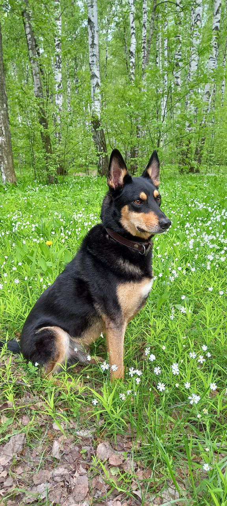

Здесь я буду рассказывать о наших достижениях в области воспитания и социализации.
В 2019 году мы забрали Крейда десятимесячным щенком из приюта для животных Сострадание НН. Он был уже довольно взрослым и имел жизненный опыт, знал правила поведения в собачьей стае.
Поэтому в самом начале совместной жизни и нам и этому красавчику было
очень не легко.

Крейду семь месяцев
Крейду пять лет